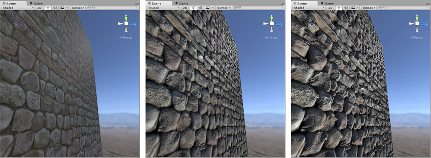

Rendering Mode, allows to choose whether the object uses transparency, and if so, which type of blending mode to use.
Opaque, is the default, and suitable for normal solid objects with no transparent areas.
Cutout, allows to create a transparent effect that has hard edges between the opaque and transparent areas. In this mode there are no semi-transparent areas, the texture is either 100% opaque or invisible. Useful for cloth with holes or tatters.
Fade, allows the transparency values to entirely fade an object out, including any specular highlights or reflections it may have. Useful to animate an object fading in or out. Not suitable for glass or plastic because the highlights also be faded out.
Transparent, the material itself will take on transparency values, based on the texture's alpha channel and the alpha of the tint colour. Reflection and highlights will remain visible. Suitable for rendering realistic transparent materials such as clear plastic or glass.
Main Maps,
Albedo, controls the base color of the surface. Specifying a single color is sometimes useful, but it is far more common to assign a texture map for the Albedo parameter, this should represent the colors of the surface of the object. Should not contain any lighting. The alpha value of the Albedo color controls the transparency level for the material, only has an effect if the Rendering mode is not Opaque. When using a texture assigned for the Albedo parameter, you can control the transparency of the material by ensuring your albedo texture image has an alpha channel. The alpha channel values are mapped to the transparency levels with white being fully opaque and black fully transparent.
Metallic, it determines how "metal-like" a surface is. When more metallic it is, it reflects the environment more and its albedo colour becomes less visible, and with less metallic, the albedo is more clear and the reflections are visible on top of the surface color rather than obscuring it. At full metallic level, the surface colour is entirely driven by reflections from the environment. When using a texture assigned for the Metallic, you can control how the metallic and smoothness levels vary across the surface of the material. When working in the Metallic workflow, the reflectivity and light response of the surface are modified by the Metallic level and the Smoothness level. Specular reflection are still generated but they arise naturally depending on the settings you give to the Metalled and Smoothness levels. Metallic mode is not just for materials which are supposed to look metallic, this mode is known as metallic because of the way you have control over how metallic or non-metallic a surface is.
Smoothness, allows to control the "microsurface detail" or smoothness across a surface. The smoothness is not something directly visible in Unity, it is a concept used in the lighting calculations. You can see the effect of this microsurface detail represented by the amount the light that is diffused as it bounces off the object. A high value, the light bounces in uniform ways creating clear reflections. A low value, the light bounces in a wide range of angles which create a diffuse colour with no clear reflections.
Normal Map, is a type of Bump map. They are a special kind of texture that allow you to add surface detail such as bumps, grooves, and scratches to a model which catch the light as if they are represented by real geometry.
Height Map, is similar to normal mapping, but more complex and performance-expensive. It shifts the areas of the visible surface texture around, to achieve a kind of surface-level occlusion effect.
They are used in conjunction with normal map.
Albedo > Normal Map > Height Map

Occlusion, is used to provide information about which areas of the model should receive high or low indirect lighting. It is a grayscale image with white indicating areas that should receive full indirect lightning, and black indicating no indirect lighting. They are normally calculated by 3D applications directly from the 3D model using the modeller or third party software.
Emission, controls colour and intensity of light emitted from the surface. When a emissive material is used, it appears to be a visible source of light itself, the object will appear "self illuminated". Emissive materials are usually used on objects where some part should appear to be lit up from inside, such as the screen of a computer.
Detail Mask, allows you to mask off certain areas of your model to have the detail texture applied This means you can show the detail texture in certain areas, and hide it in others. For example skin pores in the face but not in the lips or eyebrows.
Secondary Maps, allows you to overlay a second set of textures on top of the main textures. You can apply a second Albedo and Normal Map, that would be mapped no a much smaller scaler repeated many times across the object's surface. Compared with the mains. An example is to add skin detail, like pores and hairs, to the character skin.